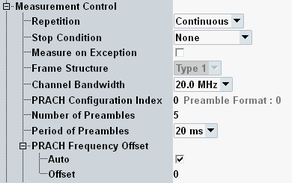

The "Measurement Control" parameters configure the scope of the LTE PRACH measurement and inform the measurement about preamble-related signal properties normally determined by higher layers.
The "Measurement Control" section consists of a general part (see below), a part with "Modulation Settings" and a part with "Power Settings".
While the combined signal path scenario is active, some of the measurement control parameters display values determined by the controlling signaling application. For these parameters, a hint is given in the parameter description. See also "Scenario = Combined Signal Path".

Defines how often the measurement is repeated if it is not stopped explicitly or by a failed limit check.
- Continuous: The measurement is continued until it is explicitly terminated. The results are periodically updated.
- Single-Shot: The measurement is stopped after one statistics cycle.
Single-shot is preferable if only a single measurement result is required under fixed conditions, which is typical for remote-controlled measurements. Continuous mode is suitable for monitoring the evolution of the measurement results in time and observe how they depend on the measurement configuration, which is typically done in manual control. The reset/preset values therefore differ from each other.
- "None": The measurement is performed according to its "Repetition" mode and "Statistic Count", irrespective of the limit check results.
- "On Limit Failure": The measurement is stopped when one of the limits is exceeded, irrespective of the repetition mode set. If no limit failure occurs, it is performed according to its "Repetition" mode and "Statistic Count". Use this setting for measurements that are intended for checking limits, e.g. production tests.
Specifies whether measurement results that the R&S CMW identifies as faulty or inaccurate are rejected. A faulty result occurs, for example, when an overload is detected. In remote control, the cause of the error is indicated by the "reliability indicator".
- Off: Faulty results are rejected. The measurement is continued. The statistical counters are not reset. Use this mode to ensure that a single faulty result does not affect the entire measurement.
- On: Results are never rejected. Use this mode for development purposes, if you want to analyze the reason for occasional wrong transmissions.
Displays the frame structure of the uplink signal as defined in 3GPP TS 36.211. The value is set implicitly via the "eMTC" ("Type 1" = FDD, "Type 2" = TDD).
Remote command:Channel bandwidth in the range 1.4 MHz to 20 MHz. Set the bandwidth in accordance with the measured LTE signal.
The parameter is a common measurement setting, i.e. it has the same value in all measurements (e.g. PRACH measurement and multi-evaluation measurement).
In the standalone (SA) scenario, this parameter is controlled by the measurement. In the combined signal path (CSP) scenario, it is controlled by the signaling application.
Specifies the PRACH configuration used by the UE. The PRACH configuration defines the preamble format and other signal properties, e.g. which resources in the time domain are allowed for transmission of preambles. The resulting preamble format is displayed for information.
In the standalone (SA) scenario, this parameter is controlled by the measurement. In the combined signal path (CSP) scenario, it is controlled by the signaling application.
For background information, see "LTE PRACH UL Signal Properties".
Remote command:Specifies the number of preambles to be captured per measurement interval for multi-preamble result views, e.g. "EVM vs Preamble" and "Power vs Preamble".
Single-preamble views evaluate only one preamble per measurement interval. To achieve maximum measurement speed for these views, set this parameter to 1.
Remote command:Specifies the periodicity of preambles to be captured for multi-preamble result views.
See also "Defining the Scope of the Measurement".
Remote command:Enable "Auto" to detect the frequency offset automatically or disable "Auto" and specify the frequency offset used by the UE. A manual configuration of the frequency offset can speed up the measurement.
The frequency offset is required to calculate the location of the six preamble resource blocks (RB) within the channel bandwidth. For FDD, the number of the first RB equals the offset. For TDD, it is calculated from this parameter and the parameter frequency resource index as described in 3GPP TS 36.211 section 5.7.1 "Time and frequency structure".
In the standalone (SA) scenario, this parameter is controlled by the measurement. In the combined signal path (CSP) scenario, it is controlled by the signaling application.
For background information, see "Preambles in the Frequency Domain".
Remote command: